23 Outubro 2026
Sexta-feira
Sustentabilidade na Medicina Intensiva
Da evidência à prática.
Da intenção ao impacto.
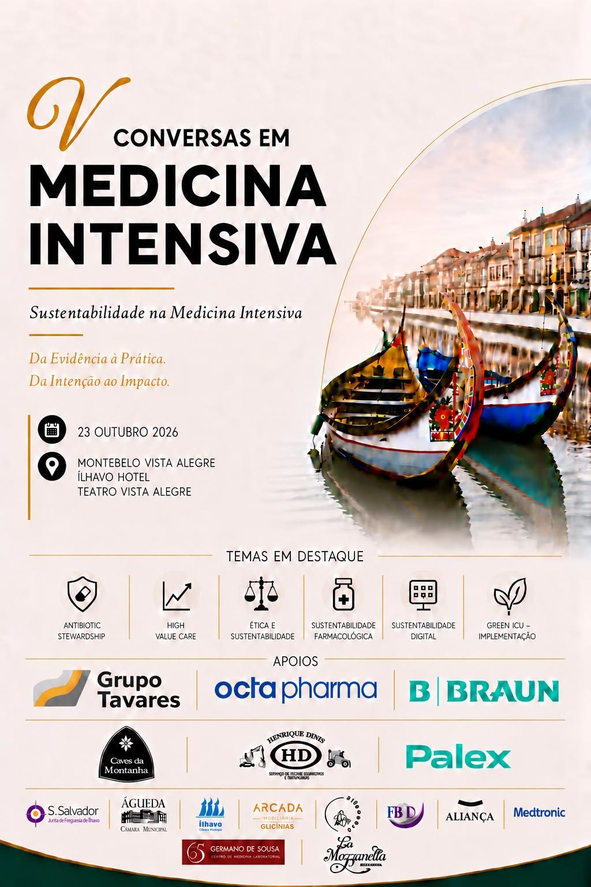
Sexta-feira
Teatro Vista Alegre
Lugar da Vista Alegre, 3830-292 Ílhavo
Moderação: Dr. Marco Melo · ULS da Região de Aveiro
Moderação: Dr. Eduardo Ribeiro · ULS da Região de Aveiro
Moderação: Dr. Joel Pinto · ULS da Região de Aveiro, e Dra. Ana Martinho · ULS de Coimbra
Moderação: Dra. Tatiana Vieira · ULS da Região de Aveiro, e Dr. Alexandre Fontoura · ULS da Guarda
Moderação: Dra. Vera Pinto Ferreira · ULS da Região de Aveiro, e Dra. Cátia Santos · ULS da Região de Leiria
Moderação: Dra. Anabela Oliveira · ULS da Região de Aveiro, e Dra. Ana Albaquerque · ULS Viseu Dão-Lafões
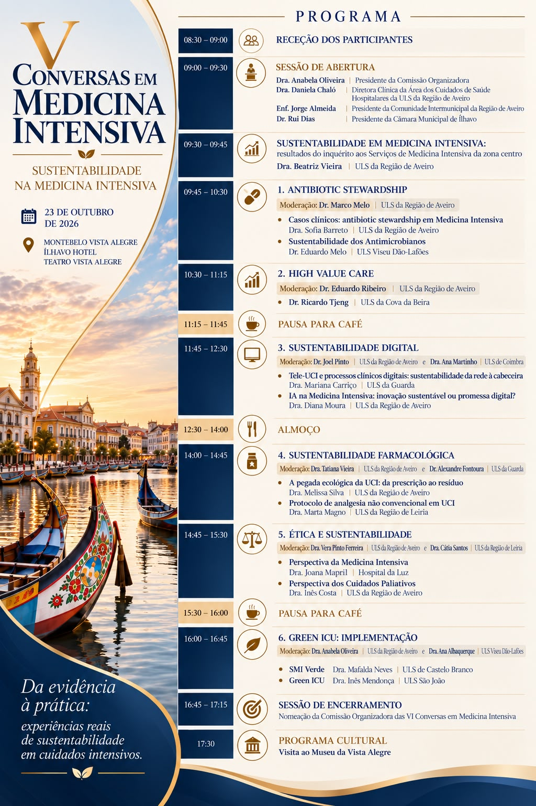
Horários sujeitos a eventuais alterações.
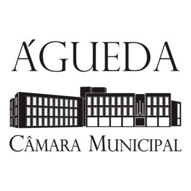
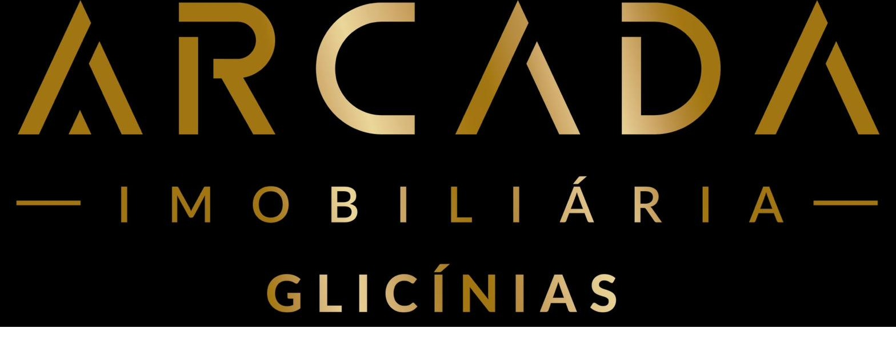
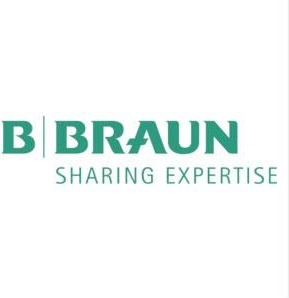
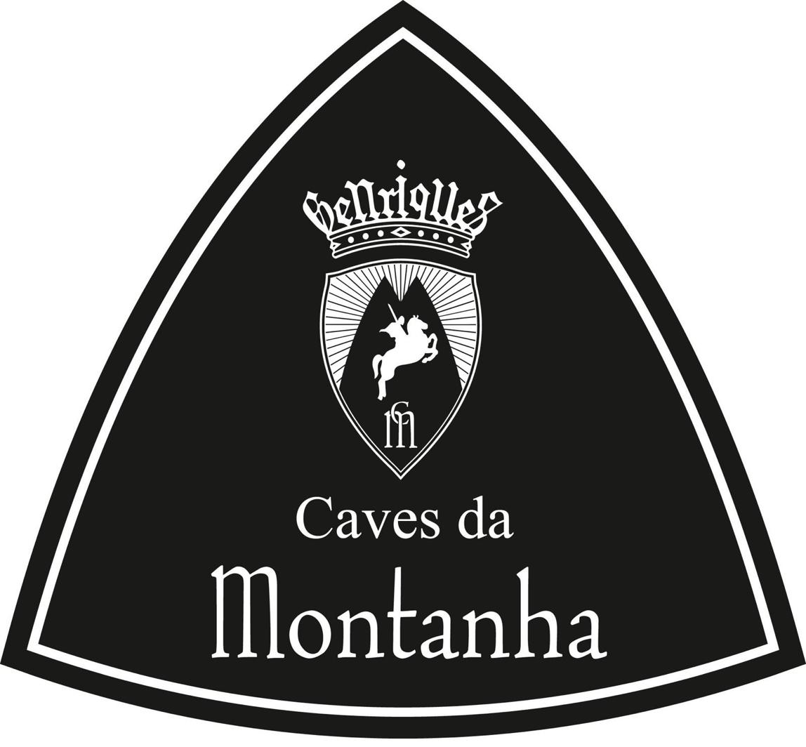
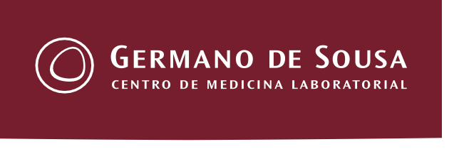
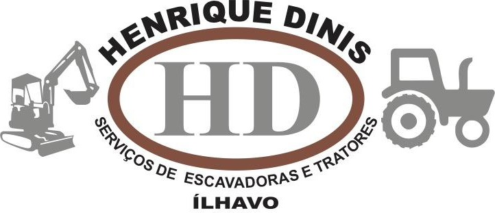
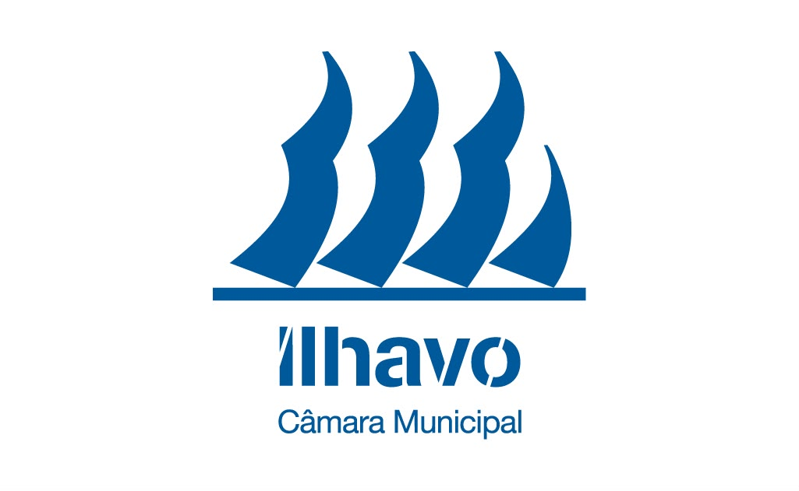
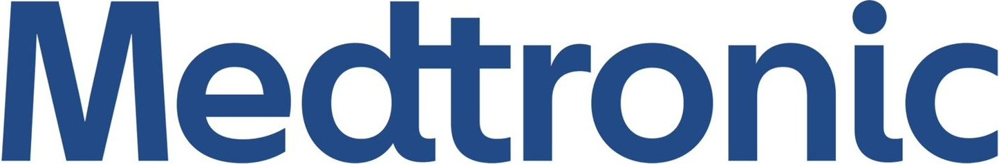
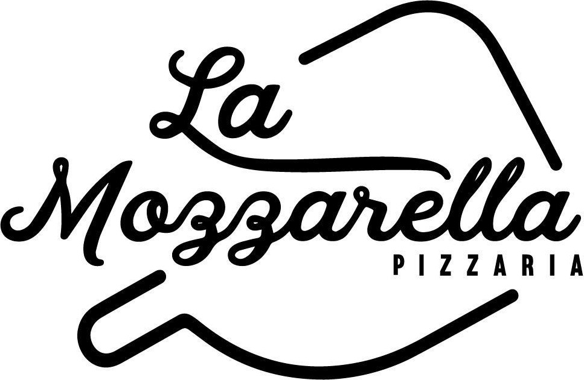
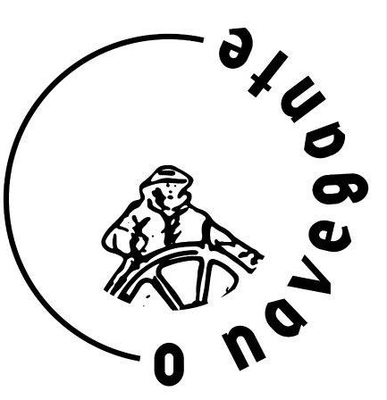
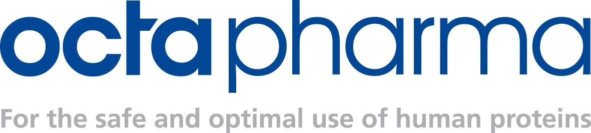
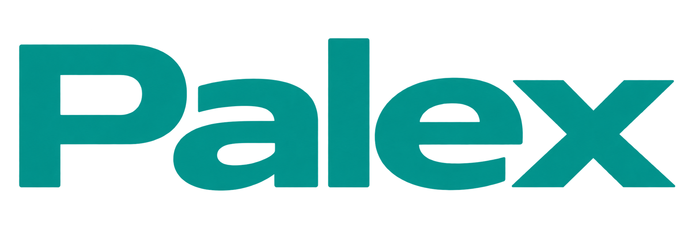
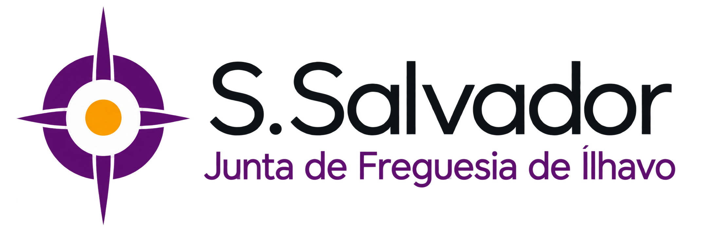